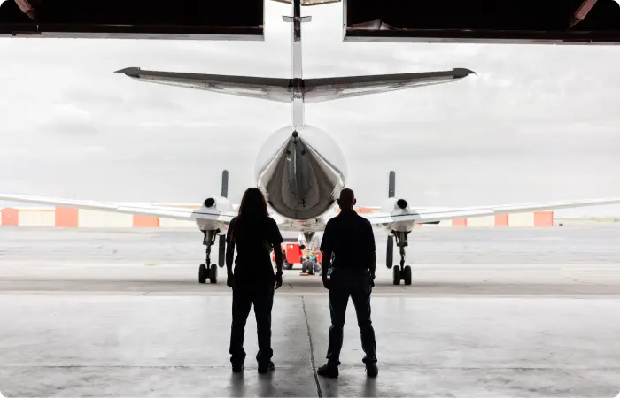

<section class="image-desc section-offset">
  <div class="container image-desc__container">
    <h2 class="h2 text-center">
      About
    </h2>
    <div class="row justify-content-between flex-lg-row">
      <div class="col-lg-6 col-sm-12 d-flex align-content-center">
        <div class="image-desc__content d-flex flex-column justify-content-center">
          <p class="desc">
            Sierra West is built on the foundation of hard work, loving what you do and doing what you love!   Sierra
            West is a family owned business that started in the early 1990’s.  Today, Sierra West has over 30 years of
            experience in on-demand air charter transportation.  SWA operates 24 hours a day, 7 days a week, so that we
            can be ready to take off with you or your cargo at a moment’s notice!  
          </p>
          <p class="desc">
            SWA maintains a fleet of aircraft throughout the United States, but International should be our middle
            name.  We fly to Canada, Mexico, Central and South America, and the Caribbean on a regular basis.  SWA is
            committed to being one of the safest and quickest options in transportation.
          </p>
        </div>
      </div>
      <div class="col-lg-6 col-sm-12 image-desc__img">
        
      </div>
    </div>
  </div>
</section>